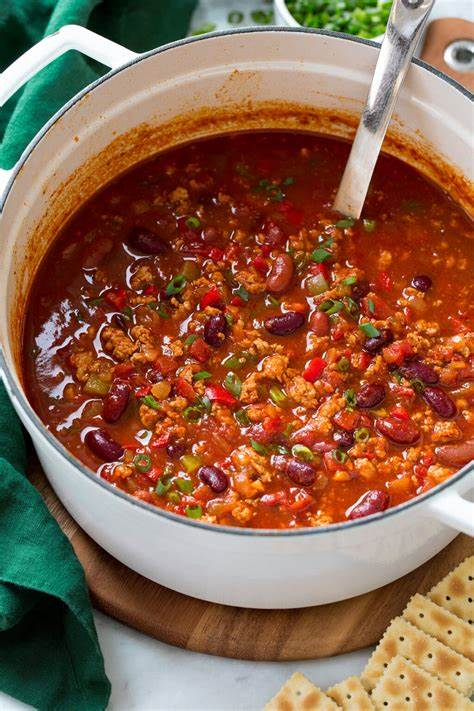

Simple Turkey Chili

Description
Here is an image of delicious turkey chili.
This turkey chili recipe is very simple
but hearty with plenty of flavors — it's even better on the second day!
I serve this chili with low-fat Cheddar cheese and low-fat sour cream.
Ingredients
- Turkey: This simple turkey chili starts with a pound of ground turkey cooked in olive oil.
- Canned Vegetables: You'll need canned crushed tomatoes and canned kidney beans.
- Garlic: A tablespoon of fresh garlic adds bold flavor and depth.
- Spices: The turkey chill is spiced with chili powder, paprika, dried oregano, cayenne pepper, cumin, salt, and black pepper.